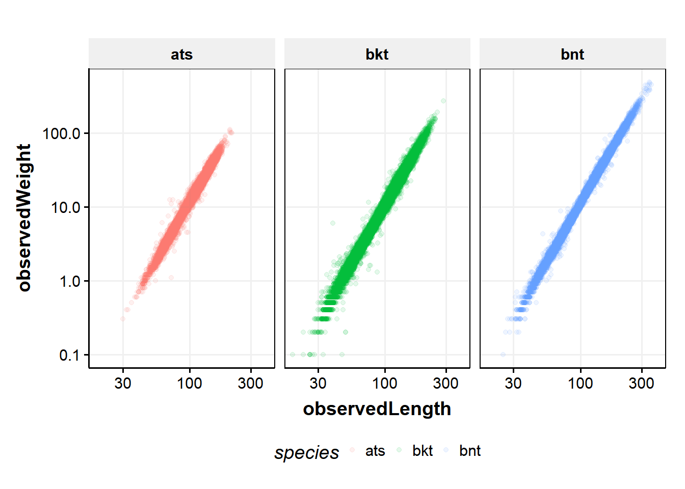
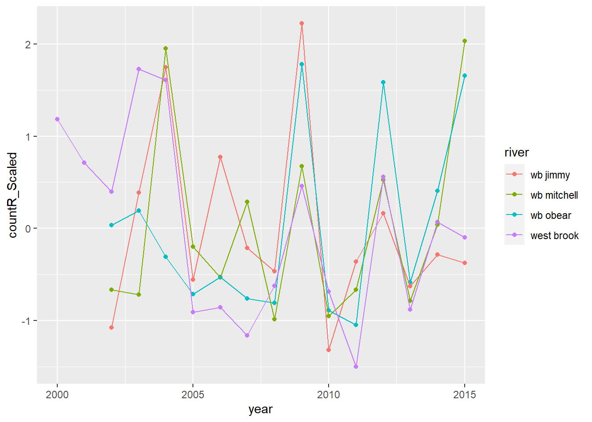
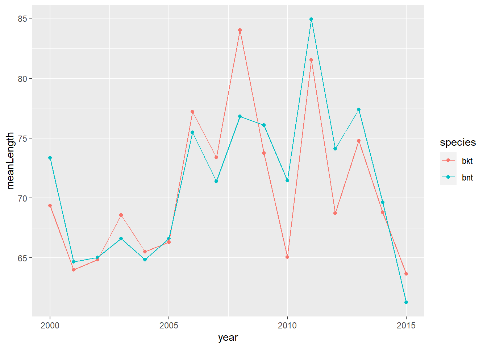
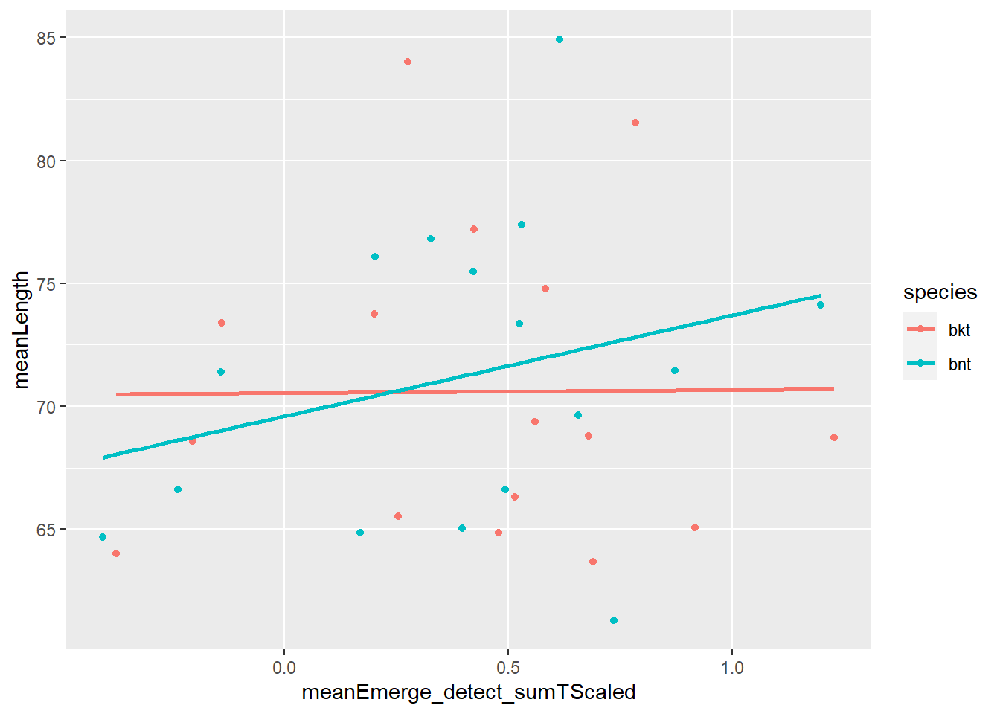

Chapter 3 Electrofishing data
3.1 Get data
# default values for createCoreData()
# function (sampleType = "electrofishing", baseColumns = T,
# columnsToAdd = NULL, includeUntagged = F, whichDrainage = "west")
if(getNew_cdWB_electro0) {
cdWB_electro0 <- createCoreData(
sampleType = "electrofishing", #"stationaryAntenna","portableAntenna"
columnsToAdd = c("sampleNumber",
"river",
"survey",
"pass",
"observedLength",
"observedWeight",
"comments"),
includeUntagged = TRUE,
whichDrainage = "west"
) %>%
addTagProperties(
columnsToAdd = c("cohort",
"species",
"dateEmigrated",
"sex",
"species"
)
) %>%
dplyr::filter(species %in% c( "bkt","bnt","ats"),
area %in% c("trib","inside","below","above"),
!is.na(sampleNumber)) %>%
addSampleProperties() %>%
addEnvironmental()
save(cdWB_electro0, file = './data/cdWB_electro0.RData')
} else {
load(file = './data/cdWB_electro0.RData')
}
str(cdWB_electro0)## tibble [91,103 x 22] (S3: tbl_df/tbl/data.frame)
## $ tag : chr [1:91103] "00088cbed0" "00088cbed3" "00088cbed4" "00088cbed4" ...
## $ detectionDate : POSIXct[1:91103], format: "2013-03-25 00:00:00" "2012-06-07 09:03:00" "2013-03-29 10:08:00" "2013-06-25 14:51:00" ...
## $ sampleName : chr [1:91103] "84" "81" "84" "85" ...
## $ sampleNumber : num [1:91103] 73 70 73 74 70 71 73 79 80 71 ...
## $ river : chr [1:91103] "wb obear" "west brook" "west brook" "west brook" ...
## $ section : chr [1:91103] "7" "1" "40" "44" ...
## $ area : chr [1:91103] "trib" "inside" "inside" "inside" ...
## $ observedLength : num [1:91103] 62 62 109 154 113 120 147 70 74 86 ...
## $ survey : chr [1:91103] "shock" "shock" "shock" "shock" ...
## $ pass : num [1:91103] 1 1 1 1 1 1 1 1 1 1 ...
## $ observedWeight : num [1:91103] 1.9 2.7 12.6 41.3 15.5 18.3 30.4 3.5 4.8 6.7 ...
## $ comments : chr [1:91103] "additional genetic sample" NA NA NA ...
## $ cohort : num [1:91103] 2012 2012 2012 2012 2011 ...
## $ species : chr [1:91103] "bkt" "bkt" "bkt" "bkt" ...
## $ dateEmigrated : Date[1:91103], format: NA NA NA NA ...
## $ sex : chr [1:91103] NA NA NA NA ...
## $ year : num [1:91103] 2013 2012 2013 2013 2012 ...
## $ season : num [1:91103] 1 2 1 2 2 3 1 3 4 3 ...
## $ proportionSampled: num [1:91103] 1 1 1 1 1 1 1 1 1 1 ...
## $ lagDetectionDate : POSIXct[1:91103], format: NA NA "2013-06-25 14:51:00" NA ...
## $ meanTemperature : num [1:91103] NaN NaN 10.7 NaN 16.5 ...
## $ meanFlow : num [1:91103] NaN NaN 0.5247 NaN 0.0338 ...3.2 Wrangle data
This section takes cdWB_electro0 and cleans it to create cdWB_electro.
reclean_cdWB_electro <- FALSEif(reclean_cdWB_electro){
drainage <- 'west'
# functions in getPrepareWBData library
cdWB_electro <- cdWB_electro0 %>%
cleanData(drainage) %>%
mergeSites(drainage) %>%
addNPasses(drainage) %>%
mutate(drainage = drainage)
save(cdWB_electro, file = './data/cdWB_electro.RData')
} else {
load(file = './data/cdWB_electro.RData')
}3.3 Explore data
ggplot(cdWB_electro, aes(observedLength, observedWeight, color = species)) +
geom_point(alpha = 0.1) +
scale_x_log10() +
scale_y_log10() +
theme_publication() +
facet_wrap(~ species)
lwReg <- cdWB_electro %>%
nest_by(species) %>%
mutate(reg = list(lm(log(observedWeight) ~ log(observedLength), data = data)))
lwReg %>% summarise(broom::tidy(reg)) ## # A tibble: 6 x 6
## # Groups: species [3]
## species term estimate std.error statistic p.value
## <chr> <chr> <dbl> <dbl> <dbl> <dbl>
## 1 ats (Intercept) -11.4 0.00942 -1210. 0
## 2 ats log(observedLength) 3.00 0.00208 1442. 0
## 3 bkt (Intercept) -11.5 0.00621 -1859. 0
## 4 bkt log(observedLength) 3.02 0.00140 2155. 0
## 5 bnt (Intercept) -11.5 0.00686 -1670. 0
## 6 bnt log(observedLength) 3.01 0.00149 2023. 0lwReg %>% summarise(broom::glance(reg))## # A tibble: 3 x 13
## # Groups: species [3]
## species r.squared adj.r.squared sigma statistic p.value df logLik AIC BIC deviance df.residual nobs
## <chr> <dbl> <dbl> <dbl> <dbl> <dbl> <dbl> <dbl> <dbl> <dbl> <dbl> <int> <int>
## 1 ats 0.989 0.989 0.0945 2080611. 0 1 22663. -45319. -45295. 215. 24092 24094
## 2 bkt 0.991 0.991 0.112 4643341. 0 1 32555. -65105. -65079. 537. 42490 42492
## 3 bnt 0.996 0.996 0.0858 4092957. 0 1 18345. -36683. -36660. 130. 17694 176963.4 Models
3.4.1 Young-of-year body size model
The question here is what is driving body size variation across years in brook trout and brown trout in the WB?
We focus on ageInSamples == 1 (age-0 fish in the fall sample) fish for growth model. This is the first sampling occasion that most fish are big enough to tag. Not all fish are big enough, however, and there is a number of untagged fish each year. We need to include both tagged and untagged fish in our age-0 size model.
Factors to include in the model are
1. Sample date
2. Cumulative temperature prior to sampling
3. Cumulative flow prior to sampling
4. Extreme flow events??
5. Fish density, maybe total and age-0 across all three salmonids??
3.4.2 Raw data for YOY model
- Environmental data (flow, temperature) are from assumed spawning dates, assumed emergence dates and actual observation (sample) dates.
- All fish data are from age-0 in autumn.
- Abundance data…?
3.4.3 Get environmental data
getNew_envDataWB <- FALSEWest Brook environmental data (flow and temperature)
if(getNew_envDataWB) {
reconnect()
envDataWB <- tbl(conDplyr, "data_daily_temperature") %>%
collect(n = Inf) %>%
full_join(tbl(conDplyr, "data_flow_extension") %>%
collect(n = Inf), by = c("river", "date")) %>%
select(-source) %>%
rename(temperature = daily_mean_temp, flow = qPredicted) %>%
mutate(dateDate = as_date(date))
save(envDataWB, file = './data/envDataWB.RData')
} else {
load(file = './data/envDataWB.RData')
}
str(envDataWB)## tibble [32,189 x 7] (S3: tbl_df/tbl/data.frame)
## $ river : chr [1:32189] "wb jimmy" "wb jimmy" "wb jimmy" "wb jimmy" ...
## $ date : POSIXct[1:32189], format: "1997-05-14" "1997-05-15" "1997-05-16" "1997-05-17" ...
## $ temperature : num [1:32189] 11.57 10.4 10.55 8.84 9.09 ...
## $ daily_max_temp: num [1:32189] 11.6 12.3 11.9 10.2 11.6 ...
## $ daily_min_temp: num [1:32189] 11.57 8.96 9.73 7.74 7.45 ...
## $ flow : num [1:32189] NA NA NA NA NA NA NA NA NA NA ...
## $ dateDate : Date[1:32189], format: "1997-05-14" "1997-05-15" "1997-05-16" "1997-05-17" ...3.4.4 Get first observations
- Filter cdWB_electro for first observations in the autumn for age-0 fish (ageInsamples == 0). Including both tagged and untagged fish.
selectedVariables <- c("tag", "species", "river", "detectionDate", "sampleNumber", "n", "proportionSampled", "observedLength", "observedWeight", "area")
firstObs_noTag <- cdWB_electro %>%
filter(is.na(tag), ageInSamples == 1) %>%
mutate(n = 1) %>%
select(all_of(selectedVariables))
firstObs_tag <- cdWB_electro %>%
group_by(tag) %>%
mutate(isFirstObs = detectionDate == min(detectionDate),
n = n()) %>%
filter(isFirstObs, ageInSamples == 1) %>%
select(all_of(selectedVariables)) %>%
ungroup()
firstObs0 <- add_row(firstObs_tag, firstObs_noTag) %>%
mutate(date = as_date(detectionDate),
yday = yday(date))For each date in firstObs0 that at least one fish was captured, calculate summary stats for flow and temperature for different time periods:
1. Assumed spawning to capture
2. Assumed spawning to assumed emergence
3. Assumed emergence to capture
Then merge results with firstObs0 to create firstObs.
spawn_month <- "11" # spawning
spawn_day <- "15"
emerge_month <- "03" # emergence
emerge_day <- "01"
firstObsDates <- firstObs0 %>% distinct(date = date(detectionDate), river)
# move to getPrepareWBData
getEnvMeans <- function(riverIn, start, end) {
out <- envDataWB %>%
filter(river == riverIn, dateDate >= start, dateDate <= end) %>%
summarize(
sumT = sum(temperature, na.rm = TRUE),
meanT = mean(temperature, na.rm = TRUE),
sdT = sd(temperature, na.rm = TRUE),
cvT = sdT/meanT,
sumF = sum(flow, na.rm = TRUE),
meanF = mean(flow, na.rm = TRUE),
sdF = sd(flow, na.rm = TRUE),
cvF = sdF/meanF,
n = n()
)
#message(paste(river, start, end,tag))
return(out)
}
firstObs_Env <- firstObsDates %>%
rowwise() %>%
mutate(
year = year(date),
spawnDate = ymd(paste0(year,spawn_month,spawn_day)) - years(1),
emergeDate = ymd(paste0(year,emerge_month,emerge_day)),
spawn_emerge = list(getEnvMeans(river, spawnDate, emergeDate)),
emerge_detect = list(getEnvMeans(river, emergeDate, date)),
spawn_detect = list(getEnvMeans(river, spawnDate, date))
)
# merge env data into firstObs0
firstObs <- firstObs0 %>%
left_join(firstObs_Env)
#str(firstObs)Unnest firstObs so environmental summary stats are available as data frame with the name of the time interval as the prefix to the statisticVariable name
firstObsUnnested <- firstObs %>%
unnest(cols = c(spawn_emerge, emerge_detect, spawn_detect), names_sep = "_") %>%
mutate(
emerge_detect_sumTScaled = (emerge_detect_sumT - mean(emerge_detect_sumT, na.rm = TRUE)) /
sd(emerge_detect_sumT, na.rm = TRUE),
emerge_detect_sumFScaled = (emerge_detect_sumF - mean(emerge_detect_sumF, na.rm = TRUE)) /
sd(emerge_detect_sumF, na.rm = TRUE),
ydayScaled = (yday - mean(yday, na.rm = TRUE)) / sd(yday, na.rm = TRUE)
)
str(firstObsUnnested)## tibble [20,783 x 45] (S3: tbl_df/tbl/data.frame)
## $ tag : chr [1:20783] "00088cbed7" "00088cbed8" "00088cbedb" "00088cbedd" ...
## $ species : chr [1:20783] "bkt" "bnt" "bkt" "bkt" ...
## $ river : chr [1:20783] "wb obear" "west brook" "west brook" "wb obear" ...
## $ detectionDate : POSIXct[1:20783], format: "2014-09-17 00:00:00" "2012-09-26 11:01:00" "2014-09-24 11:45:00" "2012-09-21 00:00:00" ...
## $ sampleNumber : num [1:20783] 79 71 79 71 79 71 71 79 71 79 ...
## $ n : num [1:20783] 2 3 1 3 1 1 4 2 1 1 ...
## $ proportionSampled : num [1:20783] 1 1 1 1 1 1 1 1 1 1 ...
## $ observedLength : num [1:20783] 70 86 89 61 60 64 70 62 87 73 ...
## $ observedWeight : num [1:20783] 3.5 6.7 8.3 2.4 2.4 2.8 4.6 2.3 7.5 4.2 ...
## $ area : chr [1:20783] "trib" "inside" "inside" "trib" ...
## $ date : Date[1:20783], format: "2014-09-17" "2012-09-26" "2014-09-24" "2012-09-21" ...
## $ yday : num [1:20783] 260 270 267 265 269 270 264 260 270 258 ...
## $ year : num [1:20783] 2014 2012 2014 2012 2014 ...
## $ spawnDate : Date[1:20783], format: "2013-11-15" "2011-11-15" "2013-11-15" "2011-11-15" ...
## $ emergeDate : Date[1:20783], format: "2014-03-01" "2012-03-01" "2014-03-01" "2012-03-01" ...
## $ spawn_emerge_sumT : num [1:20783] 110 358 131 313 131 ...
## $ spawn_emerge_meanT : num [1:20783] 1.03 3.32 1.22 2.9 1.22 ...
## $ spawn_emerge_sdT : num [1:20783] 1.36 2.3 1.56 2.43 1.56 ...
## $ spawn_emerge_cvT : num [1:20783] 1.321 0.695 1.274 0.838 1.274 ...
## $ spawn_emerge_sumF : num [1:20783] 0 48.7 25.7 0 25.7 ...
## $ spawn_emerge_meanF : num [1:20783] NaN 0.451 0.24 NaN 0.24 ...
## $ spawn_emerge_sdF : num [1:20783] NA 0.457 0.352 NA 0.352 ...
## $ spawn_emerge_cvF : num [1:20783] NA 1.01 1.47 NA 1.47 ...
## $ spawn_emerge_n : int [1:20783] 107 108 107 108 107 108 108 107 108 107 ...
## $ emerge_detect_sumT : num [1:20783] 2191 2791 2597 2602 2622 ...
## $ emerge_detect_meanT : num [1:20783] 10.9 13.3 12.5 12.7 12.5 ...
## $ emerge_detect_sdT : num [1:20783] 5.74 4.82 6.36 5 6.33 ...
## $ emerge_detect_cvT : num [1:20783] 0.527 0.362 0.51 0.394 0.507 ...
## $ emerge_detect_sumF : num [1:20783] 0 28.6 71.6 0 71.6 ...
## $ emerge_detect_meanF : num [1:20783] NaN 0.136 0.344 NaN 0.341 ...
## $ emerge_detect_sdF : num [1:20783] NA 0.246 0.533 NA 0.532 ...
## $ emerge_detect_cvF : num [1:20783] NA 1.81 1.55 NA 1.56 ...
## $ emerge_detect_n : int [1:20783] 201 210 208 205 210 210 204 201 210 199 ...
## $ spawn_detect_sumT : num [1:20783] 2301 3149 2728 2915 2753 ...
## $ spawn_detect_meanT : num [1:20783] 7.5 9.93 8.69 9.34 8.71 ...
## $ spawn_detect_sdT : num [1:20783] 6.65 6.27 7.48 6.32 7.46 ...
## $ spawn_detect_cvT : num [1:20783] 0.887 0.631 0.861 0.677 0.857 ...
## $ spawn_detect_sumF : num [1:20783] 0 77.1 97.2 0 97.2 ...
## $ spawn_detect_meanF : num [1:20783] NaN 0.243 0.31 NaN 0.307 ...
## $ spawn_detect_sdF : num [1:20783] NA 0.365 0.482 NA 0.481 ...
## $ spawn_detect_cvF : num [1:20783] NA 1.5 1.56 NA 1.57 ...
## $ spawn_detect_n : int [1:20783] 307 317 314 312 316 317 311 307 317 305 ...
## $ emerge_detect_sumTScaled: num [1:20783] -0.261 1.215 0.738 0.751 0.799 ...
## $ emerge_detect_sumFScaled: num [1:20783] -1.346 -0.518 0.727 -1.346 0.725 ...
## $ ydayScaled : num [1:20783] -0.6678 0.3131 0.0189 -0.1773 0.215 ...3.4.5 Counts of captured fish
Need to decide whether to include in a model. Spotty data.
countsRSY <- firstObs %>%
group_by(river, species, year) %>%
summarize(
count = n(),
meanPropSampled = mean(proportionSampled, na.rm = TRUE)
) %>%
mutate(countAdj = count / meanPropSampled)
countsRY <- firstObs %>%
group_by(river, year) %>%
summarize(
count = n(),
meanPropSampled = mean(proportionSampled, na.rm = TRUE)
) %>%
mutate(countAdj = count / meanPropSampled)
ggplot(countsRY, aes(year, countAdj, color = river)) +
geom_point() +
geom_line()
ggplot(countsRSY, aes(year, countAdj, color = species)) +
geom_point() +
geom_line() +
facet_wrap(~ river)
3.4.6 Raw data plots
3.4.6.2 Brook Trout, West brook
#cd1 <- cdWB_electro %>% filter(ageInSamples == 1, species != 'ats')
plotSppRiv = function(s, r) {
ggplot(firstObs %>% filter(species == s, river == r), aes(observedLength, color = is.na(tag))) +
geom_freqpoly() +
geom_vline(xintercept = 60) +
ggtitle(paste(s, r, sep = ', ')) +
xlim(c(30,125)) +
facet_wrap(~ year, scales = "free_y")
}
species = 'bkt'
riverOrdered = "west brook"
plotSppRiv(species, riverOrdered)


3.4.6.10 Trout, in the WB mainstem only
ggplot(firstObs %>% filter(species != "ats"), aes(observedLength)) +
geom_freqpoly() +
geom_vline(xintercept = 60, color = 'orange') +
facet_grid(species ~ year)
ggplot(firstObs %>% filter(species != "ats"), aes(observedLength, color = is.na(tag))) +
geom_freqpoly() +
geom_vline(xintercept = 60, color = 'orange') +
facet_grid(species ~ year)
3.4.6.11 Why are there untagged fish bigger than 60mm?
Check 2002/bkt/WB, as an example
firstObs2002BKT <- firstObs %>% filter(year == 2002, species == "bkt")
table(is.na(firstObs2002BKT$tag))##
## FALSE TRUE
## 295 253 ggplot(firstObs2002BKT, aes(observedLength, color = is.na(tag))) +
geom_freqpoly() +
geom_vline(xintercept = 60)
# looks like untagged area=inside fish wee morts, the rest were above or below
ggplot(firstObs2002BKT, aes(observedLength, color = is.na(tag))) +
geom_freqpoly() +
geom_vline(xintercept = 60) +
facet_grid(~area)
# check 2003
ggplot(firstObs %>% filter(year == 2003, species == "bkt"), aes(observedLength, color = is.na(tag))) +
geom_freqpoly() +
geom_vline(xintercept = 60) +
facet_grid(~area)
# same story as 20023.4.6.12 Why no untagged fish at all for 2000 and 2001?
cfirstObs2000_2001BKT <- firstObs %>% filter(year %in% 2000:2001, species == "bkt")
table(is.na(cfirstObs2000_2001BKT$tag))##
## FALSE
## 343 table(cfirstObs2000_2001BKT$observedLength)##
## 57 58 59 60 61 62 63 64 65 66 67 68 69 70 71 72 73 74 75 76 77 78 79 80 85 90
## 18 23 23 26 20 28 19 14 28 23 20 21 9 14 8 11 3 8 4 5 6 5 1 3 2 1 cfirstObs2000_2001BKT %>% filter(observedLength < 60)## # A tibble: 64 x 18
## tag species river detectionDate sampleNumber n proportionSampl~ observedLength observedWeight area date
## <chr> <chr> <chr> <dttm> <dbl> <dbl> <dbl> <dbl> <dbl> <chr> <date>
## 1 1bf0fc~ bkt west~ 2001-09-10 12:00:00 27 2 1 58 1.9 insi~ 2001-09-10
## 2 1bf0fc~ bkt west~ 2001-09-07 12:00:00 27 2 1 57 1.9 insi~ 2001-09-07
## 3 1bf0fe~ bkt west~ 2001-09-07 12:00:00 27 1 1 59 2.1 insi~ 2001-09-07
## 4 1bf0fe~ bkt west~ 2001-09-07 12:00:00 27 6 1 59 2.1 insi~ 2001-09-07
## 5 1bf0fe~ bkt west~ 2001-09-06 12:00:00 27 1 1 59 2.2 insi~ 2001-09-06
## 6 1bf0fe~ bkt west~ 2001-09-10 12:00:00 27 1 1 57 1.9 insi~ 2001-09-10
## 7 1bf0fe~ bkt west~ 2001-09-07 12:00:00 27 3 1 58 2 insi~ 2001-09-07
## 8 1bf0fe~ bkt west~ 2001-09-10 12:00:00 27 2 1 58 2.1 insi~ 2001-09-10
## 9 1bf0fe~ bkt west~ 2001-09-06 12:00:00 27 4 1 58 2 insi~ 2001-09-06
## 10 1bf0fe~ bkt west~ 2001-09-07 12:00:00 27 3 1 58 1.8 insi~ 2001-09-07
## # ... with 54 more rows, and 7 more variables: yday <dbl>, year <dbl>, spawnDate <date>, emergeDate <date>,
## # spawn_emerge <list>, emerge_detect <list>, spawn_detect <list> ggplot(cfirstObs2000_2001BKT, aes(observedLength, color = is.na(tag))) +
geom_freqpoly() +
geom_vline(xintercept = 60)
3.4.7 Yearly means
means <- firstObs %>%
group_by(species, year) %>%
summarize(meanLength = mean(observedLength, na.rm = TRUE),
meanYday = mean(yday, na.rm = TRUE)
)
ggplot(means, aes(year, meanLength, color = species)) +
geom_point() +
geom_line()
ggplot(means, aes(meanYday, meanLength, color = species)) +
geom_point() +
geom_smooth(method = "lm", se = FALSE)
3.4.7.1 Models
library(lme4)
library(relaimpo)
firstObsUnnestedWB <- firstObsUnnested %>% filter(river == "west brook")
modLM1 <- lm(observedLength ~ (factor(species) * emerge_detect_sumTScaled * emerge_detect_sumFScaled * ydayScaled),
data = firstObsUnnestedWB %>% filter(species != "ats"))
modLM2 <- lm(observedLength ~ (factor(species) + emerge_detect_sumTScaled + emerge_detect_sumFScaled + ydayScaled),
data = firstObsUnnestedWB %>% filter(species != "ats"))
modLM3 <- lm(observedLength ~ (factor(species) + emerge_detect_sumTScaled + emerge_detect_sumFScaled + ydayScaled)^2,
data = firstObsUnnestedWB %>% filter(species != "ats"))
AIC(modLM1, modLM2, modLM3) %>% arrange(AIC)## df AIC
## modLM1 17 79596.41
## modLM3 12 79729.23
## modLM2 6 80089.28# relaimpo::calc.relimp(modLM3) # slow
#modLMER2 <- lmer(observedLength ~ (factor(species) + emerge_detect_sumTScaled + emerge_detect_sumFScaled + ydayScaled) + 1|year, data = firstObsUnnestedWB %>% filter(species != "ats"))